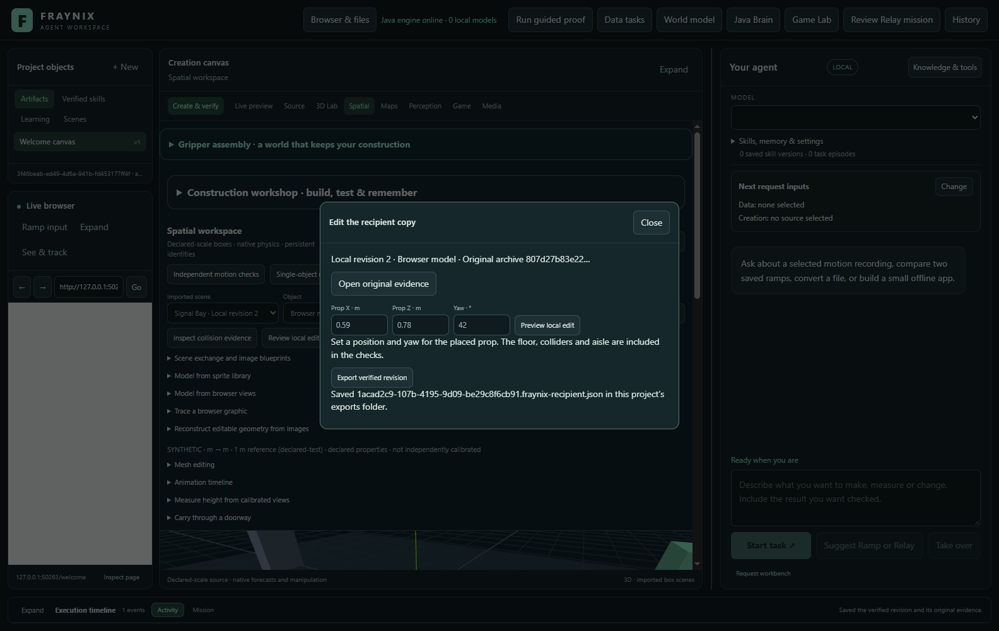
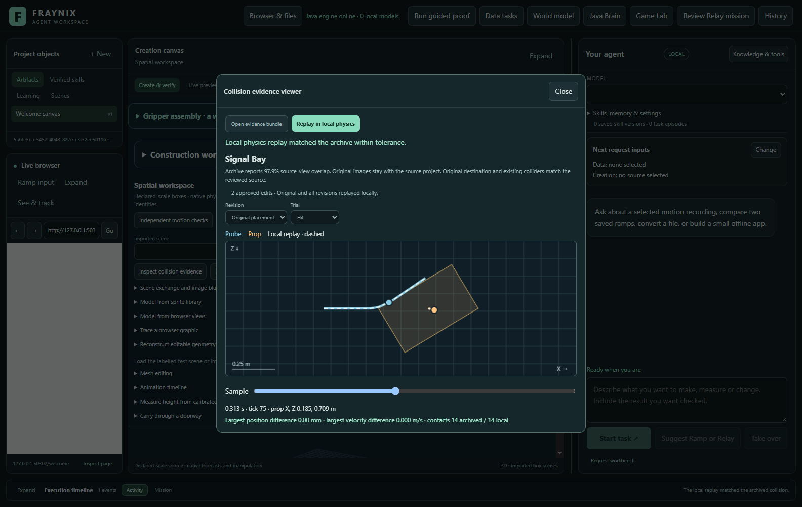
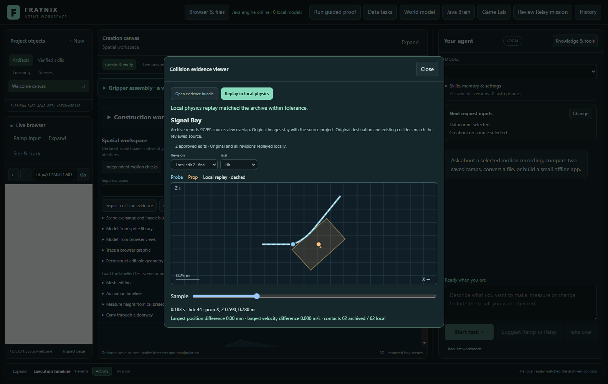
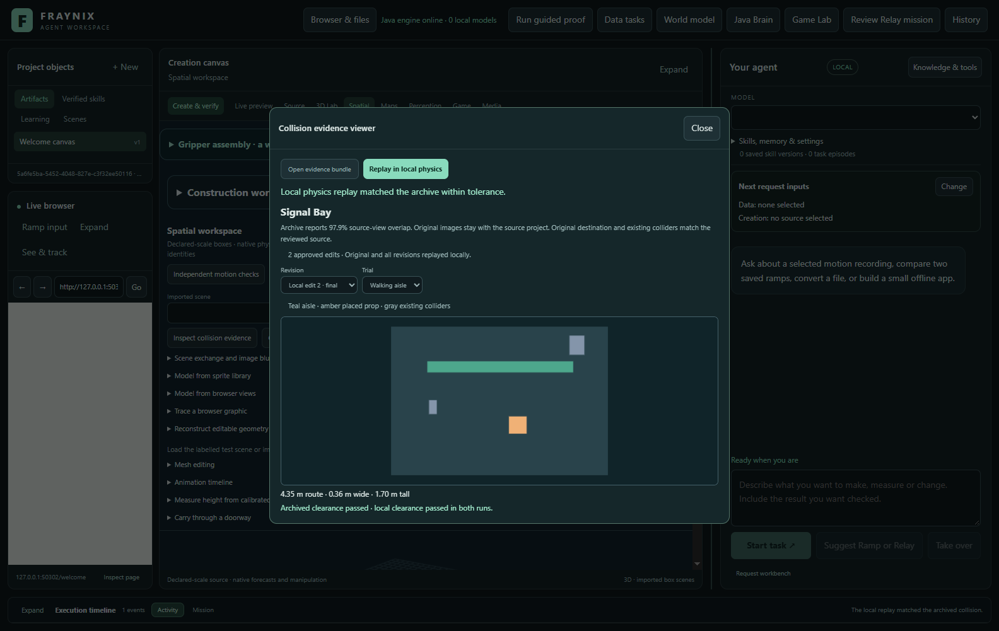

Forward and replay a verified recipient revision
Carry the original Signal Bay evidence and two approvals into an empty project. Replay every collision and walking aisle before accepting the result.
Windows reproduced first contact at ticks 75, 48 and 44. All three lateral probes missed, the 4.35 m aisle cleared in both passes at each stage, and the local ledger reopened after restart.

Export the exact committed Signal Bay revision

Replay the original placement in the second project

Compare archived contact traces with the final local replay

Inspect the independently rechecked 4.35 m aisle
System files
Open source